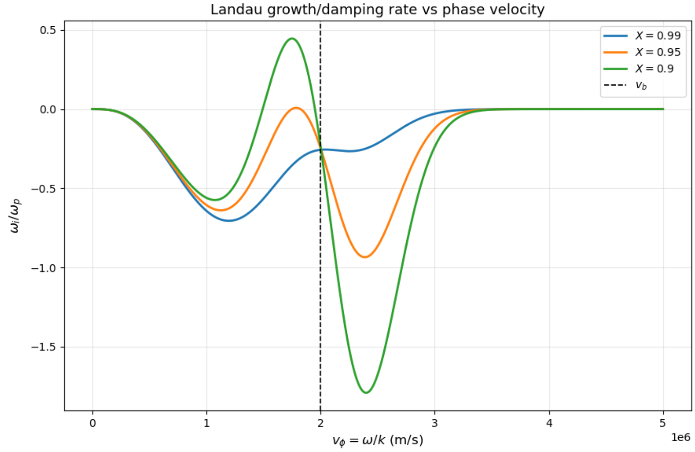
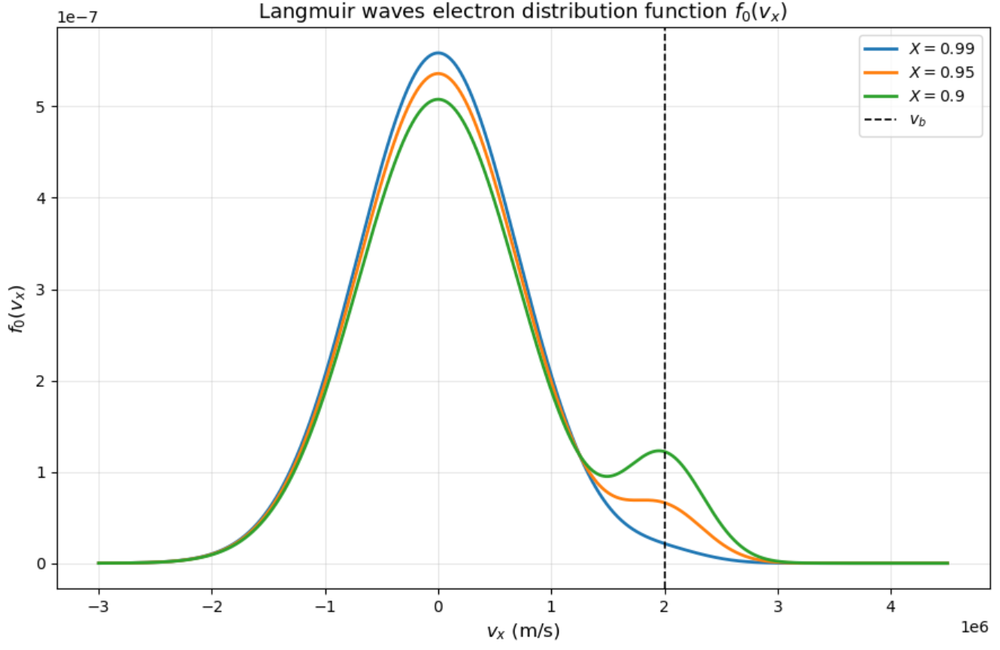

solution set 3: kinetics
$\to$ I. Laundau damping
$\to$ II. Instability of ion acoustic wave
Summary of my solutions on this page
Oh boy, kinetic description of plasmas. [vlasov, etc etc, further physics like landau damping] [lot of math and complex analysis wowowowo]
[explain what langmuir waves are]
I
Consider Landau damping of Langmuir waves for a plasma in which there are two populations of electrons: Maxwellian and beam. The normalized distribution function in one dimension is given by:
$$ f_0(v_x) = \chi \left(\frac{1}{\pi v_{th,m}^2} \right)^{1/2} e^{-\left(\frac{v_x}{v_{th,m}}\ \right)^2} + (1-\chi) \left(\frac{1}{\pi v_{th,b}} \right)^{1/2} e^{-\left(\frac{v_x - v_b}{v_{th,b}} \right)^2} $$Where $\chi = n_m/n_0$ is the ratio of the Maxwellian population density, $n_m$, to the plasma density, $n_0 = n_m + n_b$. Here, $v_b$ is the beam velocity. $v_{th,m}$ and $v_{th,b}$ are the thermal velocities of the Maxwellian and beam electrons, respectively. We will split tasks to deal with this setup in 5 sections.
-
Find a general expression for $\omega_i / \omega_p$.
The below dispersion relation includes CPDR, fluid description (Bohm-Gross), and kinetic description (last term) of plasma waves. It is essentially Landau’s solution to the dispersion relation using Vlasov’s kinetic equation for waves in a thermal, unmagnetized plasma. More crucially, it is the Landau solution for just a Maxwellian distribution function. We will begin with this simplified description.
$$ D(k, \omega) = 1 - \frac{\omega_{pe}^2}{\omega^2} \left(1 + \frac{3 v_{th}^2}{v_{\phi}^2} \right) - \frac{ i \pi \omega_{pe}^2}{k^2} \frac{\partial f_0}{\partial v_x} \Bigg|_{v_x = \frac{\omega}{k}}=0 $$With $\omega = \omega_r + i \omega_i$ we also have the real and imaginary components of the dispersion relation:
$$ D_r (k, \omega) = 1 - \frac{\omega_{pe}^2}{\omega^2} - \frac{3 \omega_{pe}^2 v_{th}^2}{\omega^2 v_{\phi}^2}, \quad D_i = -\pi \frac{\omega_{pe}^2}{k^2} \frac{\partial f_0}{\partial v_x} \Bigg|_{v_x = \frac{\omega}{k}} $$$$ D_r(k, \omega) = 1-\frac{\omega_{pe}^2}{\omega^2} - \frac{3 \omega_{pe}^2 v_{th}^2}{\omega^2 v_{\phi}^2} = 1 - \frac{\omega_{pe}^2}{\omega^2} - \frac{3 \omega_{pe}^2 k^2 v_{th}^2}{\omega^4} $$Landau damping is an inherently weak perturbation, so we will take $|\omega_i| \ll \omega_r$. Using the Taylor expansion relationship $f(x+\delta) \approx f(x) + \delta f^{\prime} (x)$:
$$ D(\omega_r + i \omega_i) \approx D(\omega_r) + (i \omega_i) \frac{\partial D}{\partial \omega} \Bigg|_{\omega_r} = 0 $$$(i \omega_i) \frac{\partial D_i}{\partial \omega} \Bigg|_{\omega_r} = 0 $ and $D_r(\omega_r) =0$ so we expand as such:
$$ D(\omega_r + i \omega_i) \approx i D_i(\omega_r)+ (i\omega_i) \frac{\partial D_r}{\partial \omega} \Bigg|_{\omega_r} = 0 $$$$ i D_i (\omega_r) + i \omega_i \frac{\partial D_r}{\partial \omega} \Bigg|_{\omega_r} = 0 $$$$ \omega_i = \frac{-D_i (\omega_r)}{\frac{\partial D_r}{\partial \omega} \Big|_{\omega_r}} $$Ok cool note that. Let’s calculate the derivative in the denominator:
$$ D_r = 1 - \omega_{pe}^2 \omega^{-2} - 3 \omega_{pe}^2 k^2 v_{th}^2 \omega^{-4} $$$$ \frac{\partial D_r}{\partial \omega} \Bigg|_{\omega_r} = 2 \omega_{pe}^2 \omega^{-3} +12 \omega_{pe}^2 k^2 v_{th}^2 \omega^{-5} \Bigg|_{\omega = \omega_r} = \frac{2\omega_{pe}^2}{\omega_r^3} + \frac{12\omega_{pe}^2 k^2 v_{th}^2}{\omega_r^5} $$Now we plug in $D_i$ and $\frac{\partial D_r}{\partial \omega}$ for $\omega_i$:
$$ \omega_i = -\frac{- \pi \frac{\omega_{pe}^2}{k^2} \frac{\partial f_0}{\partial v_x} \Big|_{v_x = \omega_r / k}}{\frac{2 \omega_{pe}^2}{\omega_r^3} + \frac{12 \omega_{pe}^2 k^2 v_{th}^2}{\omega_r^5}} $$Let’s simplify this crazy mess.
$$ \omega_i = \frac{\pi \frac{\omega_{pe}^2}{k^2} \frac{\partial f_0}{\partial v_x} \Big|_{v_x = \omega_r / k}}{\frac{2\omega_{pe}^2}{\omega_r^3}\left(1+ \frac{6k^2 v_{th}^2}{\omega_r^2} \right)} $$$$ \omega_i = \frac{\pi \omega_r^3}{2 k^2} \frac{\frac{\partial f_0}{\partial v_x} \Big|_{v_x = \omega_r/k}}{1+ \frac{6k^2v_{th}^2}{\omega_r^2}} $$Vlasov’s solution is examined in the limit of $v_{\phi} \gg v_{th}$. And so (noting that $k^2 = \omega^2 / v_{\phi}^2$):
$$ \frac{ v_{th}^2}{v_{\phi}^2} \approx 0 $$We also take that $\omega_r \approx \omega_p$ for this kinetic derivation:
$$ \omega_i = \frac{\pi \omega_{pe}^3}{2k^2} \frac{\frac{\partial f_0}{\partial v_x} \Big|_{v_x = \omega_{pe} / k}}{1} = \frac{\pi \omega_{pe}^3}{2k^2} \frac{\partial f_0}{\partial v_x} \Bigg|_{v_x = \omega_{pe} / k} $$Excellent. Let’s now figure out the partial derivative of the distribution function $f_0$ for the two populations of electrons. Starting with the Maxwellian contribution:
$$ \frac{d}{d v_x} \left(\chi \frac{1}{\sqrt{\pi} v_{th,m}} e^{-v_x^2 / v_{th,m}^2} \right) = -\frac{2 \chi v_x}{\sqrt{\pi} v_{th,m}^3} e^{-v_x^2 / v_{th,m}^2} $$And then the beam contribution:
$$ \frac{d}{d v_x} \left((1-\chi) \frac{1}{\sqrt{\pi} v_{th,b}} e^{-(v_x - v_b)^2 / v_{th,b}^2} \right) = \frac{-2(1-\chi)(v_x - v_b)}{\sqrt{\pi} v_{th,b}^3} e^{-(v_x - v_b)^2 / v_{th,b}^2} $$Plugging these two into $\omega_i$ (and note that we’re evaluating for $v_x = v_{\phi}$):
$$ \omega_i = - \sqrt{\pi} \frac{\omega_{pe}^3}{k^2} \left(\chi \frac{ v_{\phi}}{ v_{th,m}^3} e^{-v_{\phi}^2 / v_{th,m}^2} + (1-\chi) \frac{v_{\phi} - v_b}{ v_{th,b}^3} e^{-(v_{\phi} - v_b)^2 / v_{th,b}^2} \right) $$Using $ \omega_{pe} \approx \omega_r$ and $v_{\phi} = \omega_r / k$:
$$ \frac{\omega_i}{\omega_{pe}} = -\sqrt{\pi} \left(\chi \frac{v_{\phi}^3}{v_{th,m}^3} e^{-v_{\phi}^2 / v_{th,m}^2} + (1 - \chi) \frac{v_{\phi}^2 (v_{\phi} - v_b)}{v_{th,b}^3} e^{-(v_{\phi} - v_b)^2 / v_{th,b}^2} \right) $$nice
-
On one graph, plot $\omega_i / \omega_p$ versus $v_{\phi} = \omega /k$ for $v_{th,m} = 10^6$ m/s, $v_{th,b} = 5 \times 10^5$ m/s, and $v_b = 2 \times 10^6 $ m/s, for three values of $\chi = 0.99, 0.95, 0.90$. On a new graph, plot $f_0(v_x)$ for the above conditions. What do we see from these two graphs?
Not too complicated of a code is needed for the first graph:
import numpy as np
import matplotlib.pyplot as plt
# parameters
v_th_m = 1.0e6
v_th_b = 5.0e5
v_b = 2.0e6
Xs = [0.99, 0.95, 0.90]
vphi_min = 0.0
vphi_max = 5.0e6
npts = 3000
v_phi = np.linspace(vphi_min, vphi_max, npts)
# function for omega_i / omega_p
def omega_i_over_omega_p(v_phi, X, v_th_m, v_th_b, v_b):
term_maxwellian = X * (v_phi / v_th_m)**3 * np.exp(-(v_phi**2) / (v_th_m**2))
term_beam = (1 - X) * (v_phi**2 * (v_phi - v_b) / v_th_b**3) * np.exp(-((v_phi - v_b)**2) / (v_th_b**2))
return -np.sqrt(np.pi) * (term_maxwellian + term_beam)
# plot
plt.figure(figsize=(9, 6))
for X in Xs:
y = omega_i_over_omega_p(v_phi, X, v_th_m, v_th_b, v_b)
plt.plot(v_phi, y, linewidth=2, label=fr'$X = {X}$')
plt.axvline(v_b, linestyle='--', linewidth=1.2, color='k', label=r'$v_b$')
plt.xlabel(r'$v_{\phi} = \omega/k \ \mathrm{(m/s)}$', fontsize=12)
plt.ylabel(r'$\omega_i/\omega_p$', fontsize=12)
plt.title(r'Landau growth/damping rate vs phase velocity', fontsize=13)
plt.legend()
plt.grid(True, alpha=0.3)
plt.ticklabel_format(style='sci', axis='x', scilimits=(0, 0))
plt.tight_layout()
plt.show()

Code for the second graph:
vx_min = -3.0e6
vx_max = 4.5e6
npts = 3000
v_x = np.linspace(vx_min, vx_max, npts)
# Langmuir distribution function
def f0(v_x, X, v_th_m, v_th_b, v_b):
maxwellian = X * (1 / (np.pi * v_th_m**2))**0.5 * np.exp(-(v_x / v_th_m)**2)
beam = (1 - X) * (1 / (np.pi * v_th_b**2))**0.5 * np.exp(-((v_x - v_b) / v_th_b)**2)
return maxwellian + beam
# def
plt.figure(figsize=(9, 6))
for X in Xs:
y = f0(v_x, X, v_th_m, v_th_b, v_b)
plt.plot(v_x, y, linewidth=2, label=fr'$X = {X}$')
plt.axvline(v_b, linestyle='--', linewidth=1.2, color='k', label=r'$v_b$')
plt.xlabel(r'$v_x \ \mathrm{(m/s)}$', fontsize=12)
plt.ylabel(r'$f_0(v_x)$', fontsize=12)
plt.title(r'Langmuir waves electron distribution function $f_0(v_x)$', fontsize=13)
plt.legend()
plt.grid(True, alpha=0.3)
plt.ticklabel_format(style='sci', axis='x', scilimits=(0, 0))
plt.tight_layout()
plt.show()

Here’s what I notice that makes physical and mathematical sense from these graphs:
-
The sign of $\omega_i$ is controlled by the slope $\frac{\partial f_0}{\partial v} \Big|_{v_{\phi}}$.
-
The Maxwellian background gives ordinary Landau damping because its slope is negative for $v>0$.
-
However, the beam creates a bump near $v_b$, giving positive slope for $v_{\phi} < v_b$ and negative slope for $v_{\phi} > v_b$ on $f_0(v_x)$ (for smaller $\chi$s).
-
Therefore, for lower $\chi$s at least, waves with phase velocity just below the beam speed grow unstable, while waves just above the beam speed are damped.
-
Lastly, lower $\chi$ means a stronger beam, which increases both the instability on the left side of the beam velocity and the damping on the right side.
-
Consider the case above with $\chi = 0.90$. For $n_0 = 10^{18}$ $\text{m}^{-3}$, calculate the ratio $\omega_{i,max} / \nu_e$, where $\omega_{i,max}$ is the maximum growth rate and $\nu_e$ is the electron thermal equilibriation rate (can be found in the NRL Plasma Formulary). Repeat for $10^{21}$ $\text{m}^{-3}$. Comment on your results.
The following code makes these calculations in a clean manner:
X = 0.90
# physical constants
m_e = 9.1094e-31
e = 1.6022e-19
eps0 = 8.8542e-12
# numerically find max growth
y = omega_i_over_omega_p(v_phi, X, v_th_m, v_th_b, v_b)
imax = np.argmax(y)
vphi_max = v_phi[imax]
omega_i_over_omega_p_max = y[imax]
print(f"v_phi,max = {vphi_max:.6e} m/s")
print(f"(omega_i/omega_p)_max = {omega_i_over_omega_p_max:.10f}")
# convert v_th,m to T_e in eV
# using f ~ exp[-(v/v_th)^2], so v_th = sqrt(2 kT / m)
# => T_e[eV] = m_e v_th^2 / (2 e)
T_e_eV = m_e * v_th_m**2 / (2 * e)
print(f"T_e = {T_e_eV:.6f} eV")
# NRL Coulomb log for thermal e-e collisions
# n in cm^-3, T in eV
def lnLambda_ee(ne_cm3, Te_eV):
return 23.5 - np.log(ne_cm3**0.5 * Te_eV**(-1.25)) - np.sqrt(1e-5 + (np.log(Te_eV) - 2.0)**2 / 16.0)
# NRL electron collision rate
# nu_e = 2.91e-6 * n_e * lnLambda * T_e^(-3/2) [s^-1]
# n_e in cm^-3, T_e in eV
def nu_e(ne_cm3, Te_eV):
ll = lnLambda_ee(ne_cm3, Te_eV)
return 2.91e-6 * ne_cm3 * ll * Te_eV**(-1.5), ll
# plasma frequency
def omega_p(ne_m3):
return np.sqrt(ne_m3 * e**2 / (eps0 * m_e))
# evaluate for the two n_0 densities
densities_m3 = [1e18, 1e21]
for n0_m3 in densities_m3:
ne_cm3 = n0_m3 / 1e6
wp = omega_p(n0_m3)
wi_max = omega_i_over_omega_p_max * wp
nue, lnL = nu_e(ne_cm3, T_e_eV)
ratio = wi_max / nue
print("\n-----------------------------------")
print(f"n0 = {n0_m3:.3e} m^-3")
print(f"n_e = {ne_cm3:.3e} cm^-3")
print(f"ln Lambda_ee = {lnL:.6f}")
print(f"omega_p = {wp:.6e} s^-1")
print(f"omega_i,max = {wi_max:.6e} s^-1")
print(f"nu_e = {nue:.6e} s^-1")
print(f"omega_i,max / nu_e = {ratio:.6e}")
Output:
v_phi,max = 1.748916e+06 m/s
(omega_i/omega_p)_max = 0.4456305447
T_e = 2.842779 eV
-----------------------------------
n0 = 1.000e+18 m^-3
n_e = 1.000e+12 cm^-3
ln Lambda_ee = 10.751641
omega_p = 5.641534e+10 s^-1
omega_i,max = 2.514040e+10 s^-1
nu_e = 6.527595e+06 s^-1
omega_i,max / nu_e = 3.851403e+03
-----------------------------------
n0 = 1.000e+21 m^-3
n_e = 1.000e+15 cm^-3
ln Lambda_ee = 7.297764
omega_p = 1.784010e+12 s^-1
omega_i,max = 7.950092e+11 s^-1
nu_e = 4.430658e+09 s^-1
omega_i,max / nu_e = 1.794337e+02
So for the smaller density:
$$ \frac{\omega_{i,max}}{\nu_e} \approx 3.85 \times 10^3 $$And for the larger density:
$$ \frac{\omega_{i,max}}{\nu_e} \approx 1.79 \times 10^2 $$In both cases, the instability growth rate is larger than the equilibriation rate, so the wave evolution is much faster than thermal equilibriation. This implies less collisions. Also, as $n_0$ increases, the maximum growth rate $\omega_{i,max}$ increases because it scales with the plasma frequency, $\omega_p \propto \sqrt{n_0}$. However, the electron thermal equilibriation rate $\nu_e$ increases even faster with density, roughly directly proportional. So the ratio $\omega_{i,max}/\nu_0$ decreases with increasing density.
-
Let’s return to part 1 where we already assumed a dispersion relation to use for our particular distribution function. Well, rederive the dispersion relation for $f_0(v_x)$. Is the Bohm-Gross Dispersion Relation (BGDR) modified by the beam? How about the equation for $\omega_i$?
Below is the general dispersion relation that includes Vlasov’s solution and collisionless wave damping called Landau damping which is what we’ve been talking about all this time of course.
$$ D(\omega, k) = 1 +\frac{n_0 e^2}{\varepsilon_0 m k} \left(\operatorname{Pr} \int_{-\infty}^{\infty} \frac{\partial f_0 / \partial v_x}{\omega - k v_x} d v_x - \frac{i\pi}{k} \frac{\partial f_0}{\partial v_x} \Bigg|_{v_x=\omega/k} \right) $$$$ = 1 + \frac{\omega_p^2}{k} \left(\operatorname{Pr} \int_{-\infty}^{\infty} \frac{\partial f_0 / \partial v_x}{\omega - k v_x} d v_x - \frac{i\pi}{k} \frac{\partial f_0}{\partial v_x} \Bigg|_{v_x=\omega/k} \right) $$Integral by parts:
$$ \int_{-\infty}^{\infty} \frac{\partial f_0}{\partial v_x} \frac{d v_x}{\omega - k v_x} = \frac{1}{k} \int_{-\infty}^{\infty} \frac{\partial f_0}{\partial v_x} \frac{d v_x}{\frac{\omega}{k} -v_x} = -\frac{1}{k} \int_{-\infty}^{\infty} \frac{\partial f_0}{\partial v_x} \frac{d v_x}{v_x - v_{\phi}} = -\frac{1}{k} \left (\frac{f_0}{v_x - v_{\phi}} \Bigg|_{-\infty}^{\infty} \right) + \frac{1}{k} \int_{-\infty}^{\infty} \frac{-f_0}{(v_x - v_{\phi})^2} dv_x $$$$ = - \frac{1}{k} \int_{-\infty}^{\infty} \frac{f_0}{(v_x - v_{\phi})^2} dv_x $$If $v_x \gg v_{\phi}$, we expand $(v_x - v_{\phi})^{-2}$:
$$ (v_x - v_{\phi})^{-2} = v_{\phi}^{-2} \left(1 - \frac{v_x}{v_{\phi}} \right)^{-2} $$$$ = v_{\phi}^{-2} \left(1 + \frac{2v_x}{v_{\phi}} + \frac{3 v_x^2}{v_{\phi}^2} + \frac{4 v_x^3}{v_{\phi}^3} + ... \right) $$We do not have a symmetric distribution function for$v_x$ so we will keep the odd term $\frac{2 v_x}{v_{\phi}}$ although we can drop the higher order term $\frac{4v_x^3}{v_{\phi}^3}$:
$$ \int_{-\infty}^{\infty} \frac{\partial f_0}{\partial v_x} \frac{d v_x}{\omega - k v_x} = -\frac{1}{k} \int_{-\infty}^{\infty} \frac{f_0}{v_{\phi}^2} \left(1 + \frac{2v_x}{v_{\phi}} + \frac{3v_x^2}{v_{\phi}^2} \right) dv_x $$$$ = -\frac{1}{k} \left(\int_{-\infty}^{\infty} \frac{f_0}{v_{\phi}^2} dv_x + \int_{-\infty}^{\infty} \frac{f_0}{v_{\phi}^2} \left(\frac{2v_x}{v_{\phi}}\right) dv_x + \int_{-\infty}^{\infty} \frac{f_0}{v_{\phi}^2} \left(\frac{3v_x^2}{v_{\phi}^2} \right) dv_x \right) $$Before integrating each piece, consider the below Gaussian integrals to help us:
$$ \int_{-\infty}^{\infty} e^{-u^2} du = \sqrt{\pi} $$$$ \int_{-\infty}^{\infty} u e^{-u^2} du = 0 $$$$ \int_{-\infty}^{\infty} u^2 e^{-u^2} du = \frac{\sqrt{\pi}}{2} $$Let’s start with the first integral:
$$ \int_{-\infty}^{\infty} f_0 dv_x = \chi \left(\frac{1}{\pi v_{th,m}^2} \right)^{1/2} \int_{-\infty}^{\infty} e^{-(v_x/v_{th,m})^2} dv_x + (1-\chi) \left(\frac{1}{\pi v_{th,b}^2} \right)^{1/2} \int_{-\infty}^{\infty} e^{((v_x - v_b)/v_{th,b})^2} dv_x $$Substitutions: $u = \frac{v_x}{v_{th,m}} \to du = \frac{1}{v_{th,m}} dv_x$ and $v = \frac{v_x - v_b}{v_{th,b}} \to dv = \frac{1}{v_{th,b}} dv_x$.
$$ \int_{-\infty}^{\infty} f_0 dv_x = \chi \left(\frac{1}{\pi v_{th,m}^2} \right)^{1/2} \int_{-\infty}^{\infty} v_{th,m} e^{-u^2} du + (1-\chi) \left(\frac{1}{\pi v_{th,b}^2} \right)^{1/2} \int_{-\infty}^{\infty} v_{th,b} e^{-v^2} dv $$$$ = \chi \frac{1}{\sqrt{\pi} v_{th,m}} v_{th,m} \sqrt{\pi} + (1-\chi) \frac{1}{\sqrt{\pi} v_{th,b}} v_{th,b} \sqrt{\pi} = 1 $$The second integral using the same substitutions:
$$ \int_{-\infty}^{\infty} f_0 v_x dv_x = \chi \frac{1}{\sqrt{\pi} v_{th,m}} \int_{-\infty}^{\infty} v_x e^{-(v_x/v_{th,m})^2} dv_x +(1-\chi) \frac{1}{\sqrt{\pi} v_{th,b}} \int_{-\infty}^{\infty} v_x e^{-((v_x-v_b)/ v_{th,b})^2} dv_x $$$$ = \chi \frac{1}{\sqrt{\pi} v_{th,m}} \int_{-\infty}^{\infty} v_{th,m}^2 u e^{-u^2} du + (1-\chi) \frac{1}{\sqrt{\pi} v_{th,b}} \int_{-\infty}^{\infty} (v v_{th,b} + v_b) e^{-v^2} v_{th,b} dv $$$$ = 0 + (1-\chi) \frac{1}{\sqrt{\pi} v_{th,b}} \left(\int_{-\infty}^{\infty} v v_{th,b}^2 e^{-v^2} dv + \int_{-\infty}^{\infty} v_b v_{th,b} e^{-v^2} dv \right) $$$$ = (1-\chi) \frac{1}{\sqrt{\pi}} v_b \sqrt{\pi} = (1-\chi) v_b $$Using the same substitutions a third time for the third integral (with $v_x^2 = u^2 v_{th,m}^2$ and $v_x^2=(v v_{th,b} + v_b)^2$):
$$ \int_{-\infty}^{\infty} f_0 v_x^2 dv_x = \chi \frac{1}{\sqrt{\pi} v_{th,m}} \int_{-\infty}^{\infty} v_x^2 e^{-(v_x / v_{th,m})^2} dv_x + (1-\chi) \frac{1}{\sqrt{\pi} v_{th,b}} \int_{-\infty}^{\infty} v_x^2 e^{-((v_x - v_b)/v_{th,b})^2} dv_x $$$$ = \chi \frac{1}{\sqrt{\pi} v_{th,m}} \int_{-\infty}^{\infty} u^2 v_{th,m}^3 e^{-u^2} du + (1-\chi) \frac{1}{\sqrt{\pi} v_{th,b}} \int_{-\infty}^{\infty} (v_{th,b} v + v_b)^2 e^{-v^2} dv v_{th,b} $$$$ = \chi \frac{1}{\sqrt{\pi}} v_{th,m}^2 \frac{\sqrt{\pi}}{2} + (1-\chi) \frac{1}{\sqrt{\pi}} \int_{-\infty}^{\infty} (v_{th,b}^2 v^2 + 2v_{th,b} v_b v + v_b^2) e^{-v^2} dv $$$$ =\frac{\chi}{2} v_{th,m}^2 + (1-\chi) \frac{1}{\sqrt \pi} \left(\int_{-\infty}^{\infty} v_{th,b}^2 v^2 e^{-v^2} dv + \int_{-\infty}^{\infty} 2v_{th,b} v_b v e^{-v^2} dv + \int_{-\infty}^{\infty} v_b^2 e^{-v^2} dv \right) $$$$ =\frac{\chi}{2} v_{th,m}^2 + (1-\chi )\frac{1}{\sqrt{\pi}} \left(v_{th,b}^2 \frac{\sqrt{\pi}}{2} + 0 + v_b^2 \sqrt{\pi} \right) $$$$ = \frac{\chi}{2} v_{th,m}^2 + (1-\chi) \left(\frac{v_{th,b}^2}{2} + v_b^2 \right) $$Now we can return to solving the integral in $D(k, \omega)$ using the above Gaussian integrals:
$$ \int_{-\infty}^{\infty} \frac{\partial f_0}{\partial v_x} \frac{dv_x}{\omega - k v_x} = -\frac{1}{k} \left( \int_{-\infty}^{\infty} \frac{f_0}{v_{\phi}^2} dv_x + \int_{-\infty}^{\infty} \frac{f_0}{v_{\phi}^2} \left( \frac{2 v_x}{v_{\phi}} \right) dv_x + \int_{-\infty}^{\infty} \frac{f_0}{v_{\phi}^2} \left(\frac{3v_x^2}{v_{\phi}^2} \right ) dv_x \right) $$$$ = -\frac{1}{k} \left (\frac{1}{v_{\phi}^2} + \frac{2(1-\chi) v_b}{v_{\phi}^2 v_{\phi}} + \frac{3 \left(\frac{\chi}{2} v_{th,m}^2 + (1-\chi)\left(\frac{v_{th,b}^2}{2} + v_b^2 \right) \right)}{v_{\phi}^2v_{\phi}^2} \right) $$$$ = -\frac{1}{k} \left(\frac{1}{\left(\frac{\omega}{k} \right)^2} + \frac{2(1-\chi) v_b}{\left(\frac{\omega}{k} \right)^2 v_{\phi}} + \frac{3 \left(\frac{\chi}{2} v_{th,m}^2 + (1-\chi) \left(\frac{v_{th,b}^2}{2} +v_b^2 \right) \right)}{\left(\frac{\omega}{k} \right)^2 v_{\phi}^2} \right) $$$$ = -\frac{k}{\omega^2} \left(1 + \frac{2(1-\chi)v_b}{v_{\phi}} + \frac{3 \left(\frac{\chi}{2} v_{th,m}^2 + (1-\chi) \left(\frac{v_{th,b}^2}{2} +v_b^2 \right) \right)}{v_{\phi}^2} \right) $$$$ \frac{\omega_p^2}{k} \left(\operatorname{Pr} \int_{-\infty}^{\infty} \frac{\partial f_0 / \partial v_x}{\omega - kv_x} dv_x \right)= -\frac{\omega_p^2}{\omega^2} \left(1 + \frac{2(1-\chi)v_b}{v_{\phi}} + \frac{3 \left(\frac{\chi}{2} v_{th,m}^2 + (1-\chi) \left(\frac{v_{th,b}^2}{2} +v_b^2 \right) \right)}{v_{\phi}^2} \right) $$And now the derived dispersion relation for our distribution function:
$$ D(\omega, k) = 1 -\frac{\omega_p^2}{\omega^2} \left(1 + \frac{2(1-\chi)v_b}{v_{\phi}} + \frac{3 \left(\frac{\chi}{2} v_{th,m}^2 + (1-\chi) \left(\frac{v_{th,b}^2}{2} +v_b^2 \right) \right)}{v_{\phi}^2} \right) - \frac{i\pi \omega_p^2}{k^2} \frac{\partial f_0}{\partial v_x} \Bigg|_{v_x = \omega/k} $$Our fluid BGDR is different now, indicating that a beam distribution function does modify it.
Now let’s look at the growth/damping rate $\omega_i$. From part 1:
$$ \omega_i = -\frac{D_i(\omega_r)}{\frac{\partial D_r}{\partial \omega} \Big|_{\omega_r}} $$$$ D_r(\omega,k) = 1-\frac{\omega_p^2}{\omega^2} - \frac{2(1-\chi)v_b \omega_p^2 k}{\omega^3} - \frac{3 \left(\frac{\chi}{2} v_{th,m}^2 + (1-\chi) \left(\frac{v_{th,b}^2}{2} + v_b^2 \right) \right) \omega_p^2 k^2}{\omega^4} $$$$ \frac{\partial D_r}{\partial \omega} \Bigg|_{\omega_r} = \frac{2\omega_p^2}{\omega_r^3}+ \frac{6(1-\chi) v_b \omega_p^2 k}{\omega_r^4} + \frac{12 \left(\frac{\chi}{2} v_{th,m}^2 + (1-\chi) \left(\frac{v_{th,b}^2}{2} + v_b^2 \right) \right) \omega_p^2 k^2}{\omega_r^5} $$$$ \omega_i = \frac{\frac{\pi \omega_p^2}{k^2} \frac{\partial f_0}{\partial v_x} \Big|_{v_x = \omega/k}}{\frac{2 \omega_p^2}{\omega_r^3} \left(1+ \frac{3(1-\chi) v_b k}{\omega_r} + \frac{6 \left(\frac{\chi}{2} v_{th,m}^2 + (1-\chi) \left(\frac{v_{th,b}^2}{2} + v_b^2 \right) \right) k^2}{\omega_r^2} \right)} $$$$ \omega_i = \frac{\pi \omega_r^3}{2 k^2} \frac{\frac{\partial f_0}{\partial v_x} \Big|_{v_x = \omega/k}}{ 1+ \frac{3(1-\chi) v_b k}{\omega_r} + \frac{6 \left(\frac{\chi}{2} v_{th,m}^2 + (1-\chi) \left(\frac{v_{th,b}^2}{2} + v_b^2 \right) \right) k^2}{\omega_r^2}} $$$$ \omega_i = \frac{\pi \omega_r^3}{2 k^2} \frac{\frac{\partial f_0}{\partial v_x} \Big|_{v_x = \omega/k}}{ 1+ \frac{3 (1-\chi) v_b}{v_{\phi}} + \frac{3\chi v_{th,m}^2}{v_{\phi}^2} + (1-\chi)\left(\frac{3 v_{th,b}^2}{v_{\phi}^2} + \frac{6v_b^2}{v_{\phi}^2} \right)} $$Assuming $v_{\phi} \gg v_{th,m}$, $v_{\phi} \gg v_{th,b}$, and $\omega_r \approx \omega_p$:
$$ \omega_i = \frac{\pi \omega_p^3}{2k^2} \frac{\frac{\partial f_0}{\partial v_x}\Big|_{v_x=\omega/k}}{1+\frac{3(1-\chi)v_b}{v_{\phi}} + \frac{6 (1-\chi) v_b^2}{v_{\phi}^2}} $$From part 1:
$$ \frac{\partial f_0}{\partial v_x} \Bigg|_{v_x=v_{\phi}} = -\frac{2 \chi v_{\phi}}{\sqrt{\pi} v_{th,m}^3} e^{-v_{\phi}^2 / v_{th,m}^2} - \frac{2 (1-\chi) (v_{\phi} - v_b)}{\sqrt{\pi} v_{th,b}^3} e^{-(v_{\phi} - v_b)^2 / v_{th,b}^2} $$And we get an equation for Landau damping that is also modified by the beam:
$$ \omega_i = -\sqrt{\pi} \frac{\omega_p^3}{k^2} \left(\frac{\frac{ \chi v_{\phi}}{ v_{th,m}^3} e^{-v_{\phi}^2 / v_{th,m}^2} + \frac{ (1-\chi) (v_{\phi} - v_b)}{ v_{th,b}^3} e^{-(v_{\phi} - v_b)^2 / v_{th,b}^2}}{1+\frac{3(1-\chi)v_b}{v_{\phi}} + \frac{6 (1-\chi) v_b^2}{v_{\phi}^2}} \right) $$nice